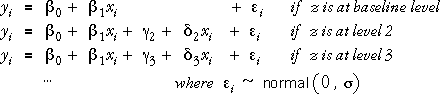
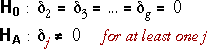

Model
We consider the following model for a numerical explanatory variable X and a categorical explanatory variable Z.

This model has the flexibility of allowing an arbitrary linear relationship between Y and X within each group (level of Z).
Hypothesis of no interaction
If there is no interaction between the effects of X and Z, the regression lines in all groups will be identical. This corresponds to the following hypthesis test.

Two groups
If there are only two levels for Z (two groups), then only a single parameter is being tested. Since the model is a GLM, a simple t-test can be used.
Gas consumption and insulation
The diagram below shows the least squares lines for a model that allows interaction.
The table shows the parameter estimates, their standard errors and the p-values for testing whether they are zero in the full model.
Since the p-value associated with the interaction variable is 0.0025, we conclude that there is strong evidence that the interaction coefficient is not zero — i.e. that there is interaction.
Note that we should not try to interpret the p-values for the main effects of temperature and insulation here. The p-values each test whether a single term can be omitted from the full model with interaction. The model with an interaction term between temperature and insulation but with one main effect is of no particular interest or meaning.
Since we have concluded that the effect of increasing temperature is different before and after insulation, it is meaningless to test whether temperature itself affects gas consumption — it must do so in one or other group!
The check-boxes in the diagram allow you to display models without interaction (even though we have concluded that it is important). Observe that the diagram enforces the hierarchy that both main effects must be in the model in order to allow their interaction to be present.
Three or more groups
When there are only two levels of the categorical variable (2 groups), testing for interaction involves only a single parameter so a t-test can be used. If there are three or more levels of the categorical variable (groups), the test involves more than one parameter, so a t-test is not appropriate.
A generalisation of the table of t-statistics and their p-values is a table of Type 3 sums of squares. These sums of squares are used to test whether groups of parameters can be set to zero in the full model. The p-values associated with the sums of squares are interpreted in exactly the same way as those in the gas-and-insulation example above.
Californian wine quality
The diagram below shows the relationship between Quality and Body in wines from three regions of California.
Since there are 3 regions, the test for interaction involves 2 parameters, and can therefore be tested using the Type 3 sum of squares with 2 degrees of freedom for these parameters.
The p-value is 0.7780, so we conclude that there is no evidence of interaction between region and body in their effects on quality.
Click the checkbox for the interaction term to display the least squares model without interaction. Now that the interaction term is removed from the model, we can interpret the p-values associated with the main effects of body and region:
The p-values associated with the two main effects are now both low, so it is almost certain that there are differences in quality between the regions and there is also moderately strong evidence that quality is associated with body.
Type 1 and 3 sums of squares
We described the test for interaction using Type 3 sums of squares in the example above since the associated p-values are interpreted in the same way as the p-values associated with t-tests of individual parameters.
An alternative table that results in the same test for interaction uses sequential (Type 1) sums of squares arranged in an analysis of variance table. If the interaction term is the final term added sequentially to the model, its Type 1 and Type 3 sums of squares and associated p-value are identical, so this just provides a different way to lay out the calculations.
Anova tables and Type 1 sums of squares are often used for experimental data where the explanatory variables are orthogonal and the order of adding the main effects does not affect the sums of squares.
On the other hand, Type 3 sums of squares are often used in observational studies where the explanatory variables are orthogonal (correlated).
Solder joint strength
An experiment was conducted to investigate the effect of the chemical element antimony on the strength of tin-lead solder joints. Four cooling methods and four amounts of antimony were used in the experiment with 3 replicates for each combination. The shear strength (MPa) was measured for each joint.
Because of the design of the experiment, the cooling method and antimony percentage are orthogonal. The analysis of variance table therefore does not depend on the order of adding the main effects (though they must be added before the interaction).
Since the p-value for the interaction is 0.1771, we conclude that there is no evidence of interaction between the effects of antimony and cooling method.
The p-value for the interaction is the same as would be observed in a table of Type 3 sums of squares, so the conclusions are the same as would have been obtained using Type 1 sums of squares.
Click the checkbox to remove the interaction from the model. The p-values for the two main effects can now be interpreted as tests for whether antimony or the cooling method affect joint strength. (Since they are orthogonal, their sequential ordering does not matter.)